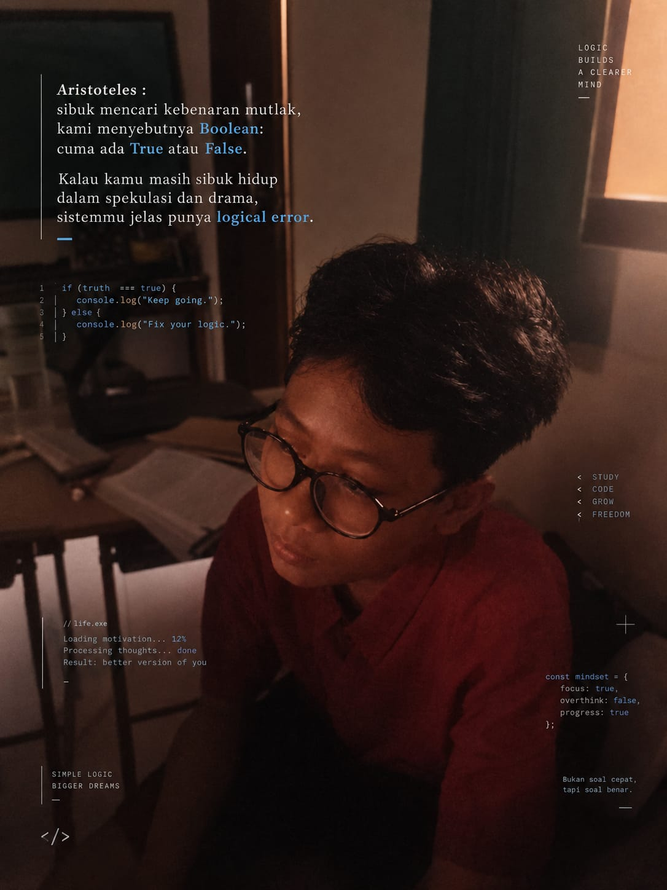

Biasa dipanggil :Dandi
Siswa dari SMPN 1 Abisnsemal yang membangun website Aventra Class ini dari nol — dengan di bantu oleh Artificial Intelligence dan bekerja sama dengan Group AThena ,mulai dari struktur halaman, sistem login, absensi real-time, sampai detail CSS-nya. Fokus bikin tampilan yang rapi dan enak dilihat, tanpa berlebihan.
Sedikit cerita di balik pembuatan website kelas ini.
CSS ditata sendiri dan di bantu dengan Artificial Intelligence dengan tema warna gold & teal, dibuat rapi dan konsisten di setiap halaman tanpa terlalu ramai warna atau efek.
Sistem login bertingkat (Murid, Admin, Guru), absensi otomatis lewat GPS, papan pengumuman, jadwal, dan agenda kelas — semuanya real-time.
HTML, CSS, dan JavaScript murni untuk tampilan, dengan Firebase Firestore sebagai database dan Netlify untuk hosting & fungsi login.